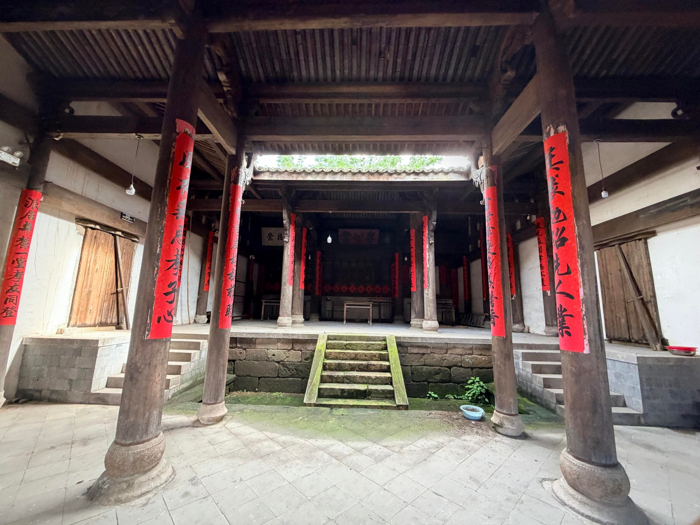
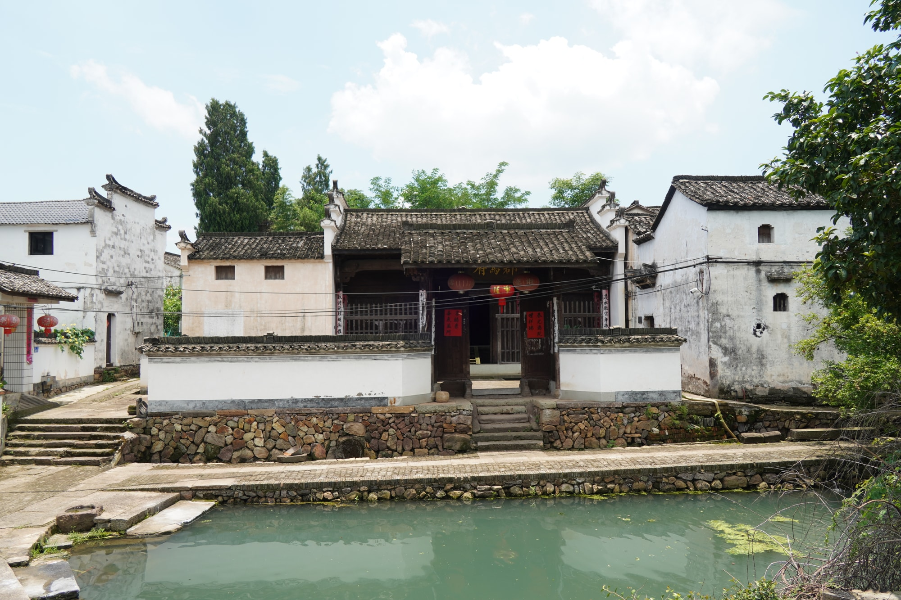

国保宗祠建筑
临塘深院，旧府遗风存心堂
存心堂又称“骏马府”，是新叶村叶氏的一座祠堂。建筑临塘而立，水面与白墙灰瓦共同形成开阔的入口环境。
01
明代嘉靖年间的老祠堂
存心堂建于明嘉靖二十五年（1546年），采用三开间对合式布局。相向布置的建筑围合出内部空间，在有限尺度中形成端正而紧凑的平面关系。
02
列柱厅堂与天井

走进存心堂，粗大的木柱撑起高敞厅堂，中间是石材铺就的天井，几级石阶连接前后空间。木柱、天井与高差共同组织出由明亮院落转入室内的空间层次。

存心堂又称“骏马府”，是新叶村叶氏的一座祠堂。建筑临塘而立，水面与白墙灰瓦共同形成开阔的入口环境。
存心堂建于明嘉靖二十五年（1546年），采用三开间对合式布局。相向布置的建筑围合出内部空间，在有限尺度中形成端正而紧凑的平面关系。

走进存心堂，粗大的木柱撑起高敞厅堂，中间是石材铺就的天井，几级石阶连接前后空间。木柱、天井与高差共同组织出由明亮院落转入室内的空间层次。